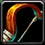
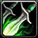
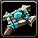
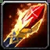
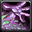
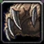

Best race for your spec
Each racial is scored 0–5 for the spec and content you picked, and the race total is the sum. Scores are our judgement from the current values; open "All racials" to see every one and how to use it.
Talent calculator
All nine classes with the launch trees from Blizzard's Nov 2 notes, a switch to compare with the October beta, required level and shareable build links.
Want a ready build? Every class has starter builds with a level-by-level talent order, and the launch changes page lists every talent change.

Hunter – Summon Hawk, Lone Wolf, Sniper Shot and petless Survival talents.
Rogue – Mutilate, the new Shank talents, Flash of Steel, Boot Knife and Death Mark.
Priest – Penance, Holy Binding, Prayer of Mending and Dark Inspiration.
Mage – Arcane Blast, Heating Up, Ice Lance and the reworked Frost tree.
Warlock – Wrack, Soul Link, Demonic Pact, Bane of Havoc and Incinerate.
Druid – Lacerate, Primal Bite, Bloom and Wild Growth in the reshuffled launch trees.Every race & racial
Latest racial changes
Launch day. Blizzard's Nov 2 development notes confirm the racial values on this page (Human Ruthless 1%, The Human Spirit 10%, Orc Command and 2 min Blood Fury, Dwarf Artisan's Precision, Tauren Plainsrunning and Endurance, Troll 15 sec Berserking, Undead 15 sec Touch of the Grave, Skyborne 2% Wind Blessed). New: Cannibalize works again while you're immune to physical damage, and base stats are corrected for every race (a Tauren Warrior now starts with 5 more Strength than a Human Warrior) – Blizzard says that fix isn't in the game files yet. The notes don't give Skysight's or Attuned's durations, so both versions stay listed. All talent calculators now show the launch trees, including the big Rogue, Shaman and Warrior reworks.
Talent calculators for all nine classes are live: Priest, Shaman, Warlock, Warrior, Mage and Druid join Paladin, Rogue and Hunter. No new racial changes since the Oct 30 hotfix.
Rogue and Hunter talent calculators added. No new racial or class changes since the Oct 30 hotfix (checked Nov 1, 23:00 CET).
Hotfix data: Skyborne Skysight lasts 30 sec and Charged / Attuned 15 min – Blizzard's Oct 26 post said 15 sec and 1 hour. We show both until it's settled.
Orc Blood Fury cooldown 3 min → 2 min. Troll Berserking 10 sec → 15 sec. Undead Touch of the Grave internal cooldown 25 sec → 15 sec. Skyborne Charged and Attuned now persist through death but are removed on entering a raid.
Human Ruthless 2% → 1% crit; The Human Spirit 5% → 10% Spirit. Dwarf Earth's Wrath removed, Artisan's Precision (+1% hit) added. Tauren Plainsrunning 2% per stack up to 60% (no longer on mounts); Endurance now 5% health only. Orc Savage removed, Command restored (+5% Hunter and Warlock pet damage). Skyborne Wind Blessed 3% → 2% haste.
Weapon specializations replaced. Shatter Curse 15% → 5% with no immunity. War Stomp 90 sec. Troll Regeneration 20%. Touch of the Grave 20% / 30% proc chance.